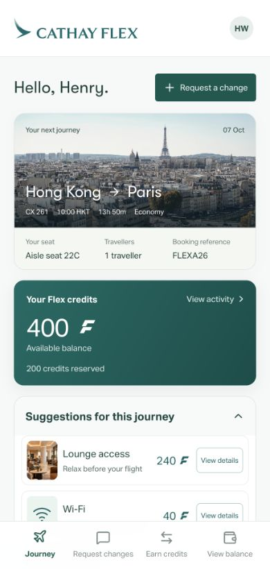

64%
would accept an equally good seat to help someone sit with companions
Among 1,000 US adults surveyed by YouGov.
YouGov, November 2022, question 6 ↗A marketplace for passenger flexibility
Cathay Flex connects passengers who need a travel change with people willing to make one. Those who help earn Flex Credits for benefits on this journey or the next.
See an exchangeTeam Globe at Cathay Hackathon 2026
Seats, baggage and travel benefits

 A passenger needs a change
A passenger needs a change Another can make it possible
Another can make it possibleEarned through flexibility. Available for future travel needs.
The opportunity
One traveller may need a particular seat or flight. Another may be happy with a different arrangement. Research shows that this flexibility exists.
Among 1,000 US adults surveyed by YouGov.
YouGov, November 2022, question 6 ↗
Among customers contacted in two LATAM flight-change trials.
Reported by Caravelo, 2019, pages 6–9 ↗Cathay Flex makes that willingness useful by connecting it with other passengers’ requests and rewarding the people who help.
The passenger experience
Follow one passenger through an exchange, then see how the credits can help on a later journey.
Choose a seat change that works for you.
The completed change earns a reward.
Use your balance on a later journey.
Flex coordinates the people and services involved.
Credits connect separate exchanges, so the value you earn can support a different travel need.
Inside Cathay Flex
Each part of the passenger interface supports a different task, with suggestions informed by the journey and available credit balance.

Journey overview
Eight travel resources
Seat and flight changes, released services and available airline capacity all participate in one marketplace. The way each resource is allocated determines how passengers can earn or use credits.
Value earned through one resource can be used for another, on this journey or a later one.
How Cathay Flex differs
Airline incentives, upgrade bids and loyalty redemption already serve specific needs. Flex brings passenger-led demand, coordinated exchanges and earned travel value together.
Travellers publish their own travel requests. Others can earn credits by making those changes possible, alongside Cathay’s incentives.
Flex connects different passengers’ requests, acceptable changes and available airline services to find exchanges that meet more travel needs together.
Passengers earn credits by helping other travellers or releasing eligible services. They can use those credits across travel resources and later journeys.
Service design and technology
AI interprets passenger needs, optimisation finds compatible arrangements, and transaction services coordinate booking updates and credit settlement. Cathay supplies booking and capacity information, with operating controls across the service.
Booking data and available capacity inform the AI and matching services. Confirmed changes update airline records, while the operations console tracks products, reward budgets and exchanges.
This request needs both passenger cooperation and airline capacity. Change the baggage availability to see how the matching result responds.
Open this example to calculate a match.
Established foundations, tailored to passenger exchanges
Business value
Passenger exchanges improve the travel experience, while targeted airline incentives create opportunities for additional revenue and lower operating costs.
On the current journey

Compatible seat and flight changes fulfil needs that the original bookings could not meet. Automated matching and booking coordination reduce repeated staff follow-up.
At the next booking

Saved credits give passengers benefits to return for. Travel arrangements that fit their needs give them another reason to choose Cathay.
Commercial model
Passengers compensate one another with existing credits. Future redemption and a better travel experience support repeat bookings.
Cathay rewards qualifying changes that release seats for resale or reduce costs through timely meal declines and verified lighter packing.
Cathay retains the value after delivery costs. Credit prices, reward budgets and available benefits are set against additional ticket revenue and avoided operating costs.
Resource efficiency and sustainability
Flex rewards actions that reduce unnecessary preparation, lower baggage weight and make better use of scheduled flights.

A meal declined before the catering deadline can be removed from production and loading, reducing food waste.

Passengers earn credits for released baggage allowance or verified lighter packing under Cathay’s rules. Lower carried weight can reduce fuel use and emissions.
JAL and Sumitomo’s clothing-rental programme illustrates the link between travelling with less baggage and lower emissions.
JAL and Sumitomo, 2024 ↗
Voluntary flight changes can free seats where demand is higher. Filling those seats spreads a flight’s emissions across more passengers.
IATA’s methodology accounts for load factor when calculating emissions allocated to each passenger.
IATA CO₂ Connect methodology ↗Day Two
As the service expands, more rewards and more participants create new reasons to contribute. Passenger requests also show where the travel offer could improve.
Approved partner benefits and merchandise extend the ways passengers can use their credits.
More passengers across more routes give Flex more opportunities to connect compatible requests.
Unmet requests, accepted alternatives and release timing help Cathay shape service availability and reward programmes.
Passengers earn value by helping other travellers.
Cathay meets more needs with existing resources.